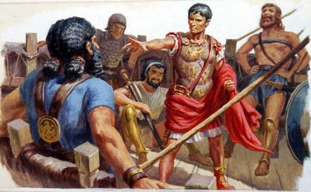

Введение
Гай Юлий Цезарь — ключевая фигура мировой истории. Выдающийся полководец, оратор, писатель и государственный деятель, он кардинально изменил вектор развития Европы и Средиземноморья. Его имя стало синонимом единовластия, а масштабные военные реформы и политические решения привели к демонтажу вековых институтов Римской республики и открыли путь к созданию Великого Рима.
Происхождение, юность и испытание Суллой
Родившись около 100 года до н.э., Цезарь происходил из древнего патрицианского рода Юлиев, возводившего свою родословную к богине Венере. Несмотря на знатность, семья не обладала колоссальными богатствами. Благодаря матери Альбуции Цезарь получил блестящее образование: изучил ораторское искусство, греческую литературу, философию и военную науку.
Юность Цезаря пришлась на суровую эпоху диктатуры Суллы. Оказавшись под ударом из-за родства с популярным вождем Гаем Марием (его тетка Юлия была его женой), молодой Цезарь категорически отказался выполнить требование диктатора — развестись с женой Корнелией. Это решение едва не стоило ему жизни. Скрываясь в горах, Цезарь лишь благодаря заступничеству влиятельных родственников и весталок получил помилование. Тогда Сулла и произнес пророческие слова:
«В этом мальчишке сидит сотня Мариев».
— Луций Корнелий Сулла
После смерти Суллы Цезарь отправился на Восток. По пути на остров Родос он попал в плен к киликийским пиратам. Когда разбойники потребовали за него 20 талантов выкупа, Цезарь со смехом заявил, что они не знают, кого поймали, и предложил заплатить 50. Находясь в плену, он вел себя как хозяин, писал стихи и шутливо обещал распять пиратов — что немедленно и сделал, едва получив свободу и снарядив флот.

Рисунок М. Энникё.
Cursus honorum и Первый триумвират
Вернувшись в Рим, Цезарь стремительно продвигался по традиционной лестнице государственных должностей (cursus honorum). Защищая интересы плебеев, устраивая пышные гладиаторские бои и проявив себя в качестве талантливого адвоката, он завоевал любовь простого народа.
В 63 году до н.э. в Риме вспыхнул заговор Катилины — попытка захвата власти обедневшими нобилями. Цезарь проявил невероятное мужество в Сенате: выступая против смертной казни для заговорщиков без суда, он отстаивал буквы закона даже под угрозой расправы со стороны оптимиматов. В тот же год он добился пожизненного титула **Великого Понтифика** (главного жреца Рима), что закрепило его сакральный авторитет.
Успешно проявив себя в качестве пропретора Дальней Испании, он вернулся в Рим за триумфом и консульством. В 60 году до н.э. Цезарь заключил тайный альянс с победоносным полководцем Гнеем Помпеем и богатейшим человеком Рима Марком Крассом. Этот союз, вошедший в историю как **Первый триумвират**, позволил Цезарю стать консулом на 59 год до н.э. и провести важнейшие аграрные законы в пользу ветеранов Помпея и городской бедноты.